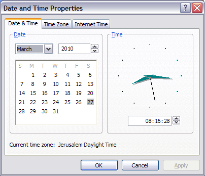

I guess everyone is familiar with the little calendar that pops up when you double click on the clock in the system tray of Windows XP:

As you can see, this calendar shows weeks starting on Sunday, but this only happened after some effort. It used to start on Mondays, which was driving us crazy (since in Israel weeks always start on Sunday, which is the first working day of the week).
Strangely enough, this is not an option you can individually configure in the Regional Options tool of the control panel. It comes pre-configured with the country standard you select.
I used to have English (United Kingdom) set there. I don't like using the Israel setting because then dates become in Hebrew (although it can be probably customized).
A
question on superuser.com didn't produce too much information, except a tip from
another forum to play with some obscure Windows registry setting.
What eventually solved it for me is changing the country setting to English (U.S.). I used UK before because I prefer the metric system and because I dislike the American way of showing dates (
mm-dd-yyyy). But that can be individually customized.
What's more strange is that the UK setting is Monday as the first day, and the US setting is Sunday. According to
Wikipedia, both are acceptable in both US and UK, so it's strange that this difference exists.